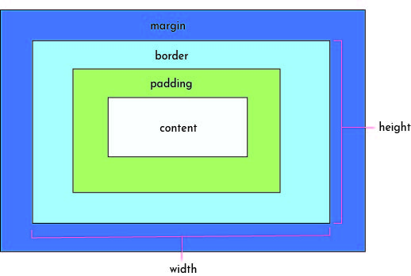

Structure, Phrasing and Display
Block-level elements may include inline and other block-level elements. Inline elements usually only contain other data and inline
elements. Block-level elements always bein on new lines and in-line elements do not. Additionally, they inheirit directionality
information differently. The different display values include none, inline, block, and inline-block. These properties allow you to display
the type of rendering box of an element.
Box Model
The box model in CSS is a box that wraps around every HTML elements including margins, orders, padding, and the content. Depending on the way the box is defined changes the way the width
and height properties change. For example, if the box is defined as a block, the padding, margin and border will push the other elements away from the box.
If the outer display is defined as an inline type, the margins and borders will adjust but the ither inline boxes will not move away from the box.

Background Images
Background Images through CSS is typically used when wanting to only have the image serve as a background of something, meaning that seeing the whole image isn't its main purpose.
Additionally, you can add text and elements on top of the image when it serves as the background of an element. Typically, using img is used when the image holds important semantic meaning.
Using img ensure it will be communicated on all screen users.